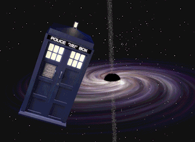
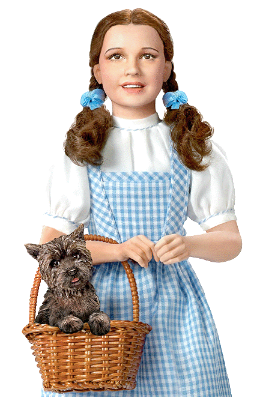

!DOCTYPE html>
<html lang="en">

<head>
  <meta charset="UTF-8">
  <meta name="viewport" content="width=device-width, initial-scale=1.0">
  <title>TARDIS Launch</title>
  <style>
    body {
      background-color: #f0f0f0;
      margin: 15;
      font-family: franklin gothic;
    }

    #container {
      width: 1600px;
      height: 1037px;
      margin: auto;
      position: relative;
      background-color: #000000;
    }

    .layer {
      position: absolute;
    }

    #image1 {
      top: 75px;
      left: 36px;
      width: 1331px;
      height: 862px;
      z-index: 1;
    }

    #image2 {
      top: 363px;
      left: 1108px;
      width: 396px;
      height: 574px;
      z-index: 2;
    }


    #text1 {
      top: 23px;
      left: 7px;
      font-size: 87px;
      font-family: segoe ui;
      color: #ff1500;
      z-index: 4;
    }

    #text2 {
      top: 893px;
      left: 36px;
      font-size: 42px;
      color: #ffffff;
      z-index: 5;
    }
  </style>
</head>

<body>
  <div id="container">
    
    


    <div id="text1" class="layer">Not TARDIS like Time and Relative Dimension in Space, but Time and Relative Dimension in Slay</div>
    <div id="text2" class="layer"> <a href="1980s-nyc.html">Now where is this locket?</a></div>
  </div>
</body>

</html>